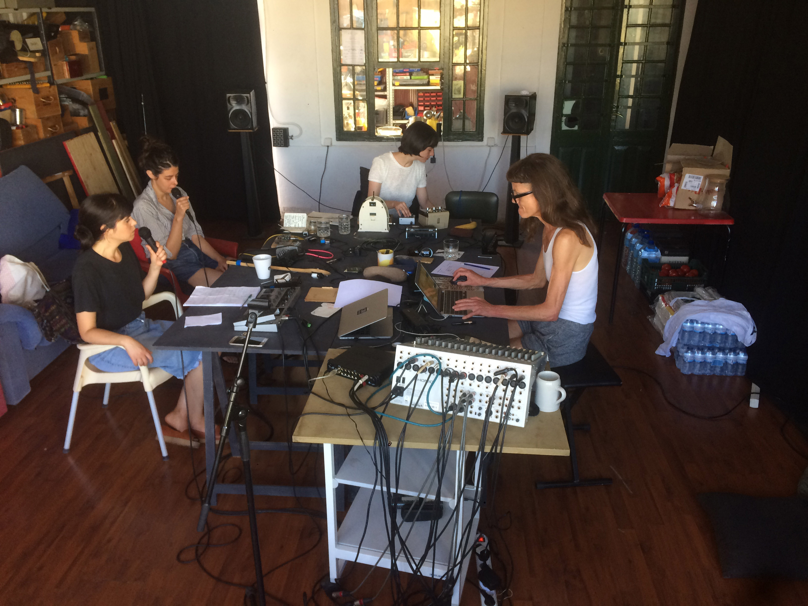
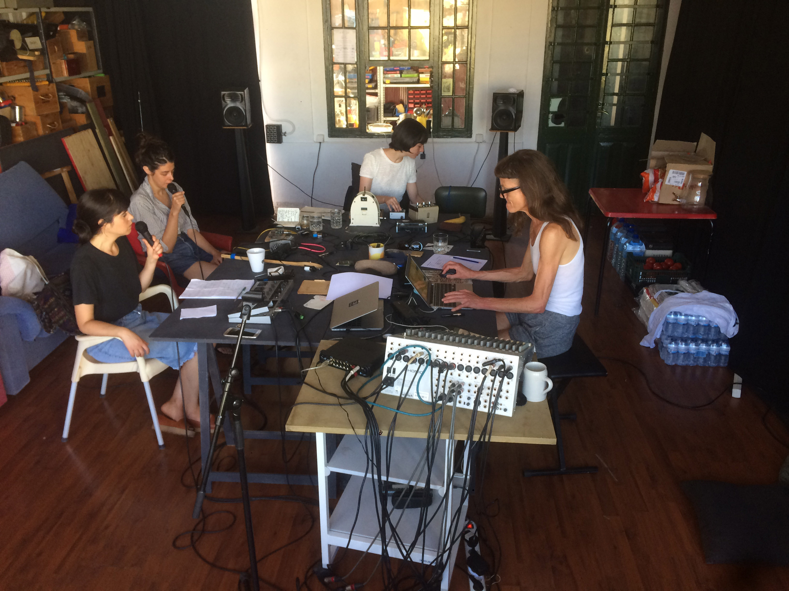

Music
Well

Well is an experimental duo based in Porto, Portugal, formed by Inês Castanheira and João Sarnadas. They just released Tape under the Favela Discos wing, using various instruments built by Inês, and some other more normal things like pedals and stuff. Between mantras, slow melodies, and rhythm both tribal and mechanic, they use mostly repetition and surprise to constrict and construct their sound. Tape is the first release under the name Well, but the duo has other music that can be heard on their bandcamp page. And if Inês is strongly connected to music, creating electronic objects and experimenting in hardware hacking, Sarnadas for the last decade, has been creating a strong presence in the Portuguese music scene with projects like Coelho Radioactivo, Flamingos and the label Favela Discos The album’s last track is also present in Memories Overlooked, a tribute album to Leyland Kirby (The Caretaker) curated by Nmesh and released by No Problema Tapes.
welll.bandcamp.com
Well is an experimental duo based in Porto, Portugal, formed by Inês Castanheira and João Sarnadas. They just released Tape under the Favela Discos wing, using various instruments built by Inês, and some other more normal things like pedals and stuff. Between mantras, slow melodies, and rhythm both tribal and mechanic, they use mostly repetition and surprise to constrict and construct their sound. Tape is the first release under the name Well, but the duo has other music that can be heard on their bandcamp page. And if Inês is strongly connected to music, creating electronic objects and experimenting in hardware hacking, Sarnadas for the last decade, has been creating a strong presence in the Portuguese music scene with projects like Coelho Radioactivo, Flamingos and the label Favela Discos The album’s last track is also present in Memories Overlooked, a tribute album to Leyland Kirby (The Caretaker) curated by Nmesh and released by No Problema Tapes.
welll.bandcamp.com
#Tape
"This minimal-info tape from Portugal starts out with a 25-minute live seance for its first side. “Mass In C Minor For Diskette Box” sounds like it couldn’t have taken more than a few small machines to make, but the duo manage to conjure ghosts that the machines’ manufacturers certainly weren’t aware were inside of them. Starting with a prowling drone, a clicking beat gradually grows louder and more out of control. It eventually dies down, but then other noises begin to swarm like an ever-growing flock of mechanical robot birds. Once the terror becomes too much to bear, things start exploding and shooting off into space..." Paul Simpson
released April 22, 2017
Side A was recorded live in Parva #0 at Gon's basement.
Side B was recorded at Stop
Mastered by João Sarnadas
Edited by Favela Discos


#Memories Overlooked
A tribute album to Leyland Kirby (The Caretaker), curated by Nmesh and released by No Problema Tapes

A tribute album to Leyland Kirby (The Caretaker), curated by Nmesh and released by No Problema Tapes
Mink
Mink is Marta Ångela, Inês Castanheira and Diana Combo directed by Kaffe Matthews and commissioned by Sonoscopia for Colexpla International Festival of Sonic Explorers, Teatro Carlos Alberto, Porto, September 2018. Working live with DIY electronics, voice, software, field recordings, a pau, improvisation and multichannel diffusion, together they explore the phenomenon of magnetism through contemporary urban landscapes and the human body, going deep underground in air and underwater, creating unknown and curious atmospheres via massive and intricate noise fields to the tiniest of details.
www.festivalcolexpla.com
Colexpla International Festival of Sonic Explorers, Teatro Carlos Alberto, Porto, September 2018
Photos by Rui Pinheiro

Mink is Marta Ångela, Inês Castanheira and Diana Combo directed by Kaffe Matthews and commissioned by Sonoscopia for Colexpla International Festival of Sonic Explorers, Teatro Carlos Alberto, Porto, September 2018. Working live with DIY electronics, voice, software, field recordings, a pau, improvisation and multichannel diffusion, together they explore the phenomenon of magnetism through contemporary urban landscapes and the human body, going deep underground in air and underwater, creating unknown and curious atmospheres via massive and intricate noise fields to the tiniest of details.
www.festivalcolexpla.com
Colexpla International Festival of Sonic Explorers, Teatro Carlos Alberto, Porto, September 2018
Photos by Rui Pinheiro
